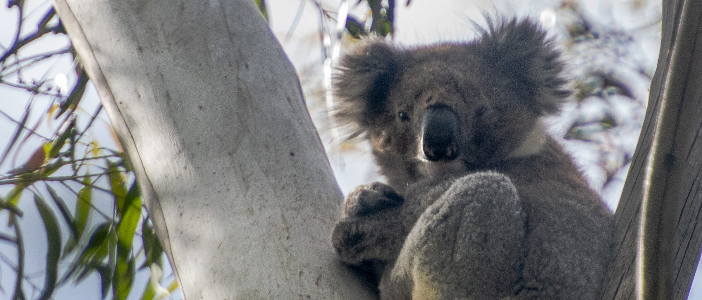
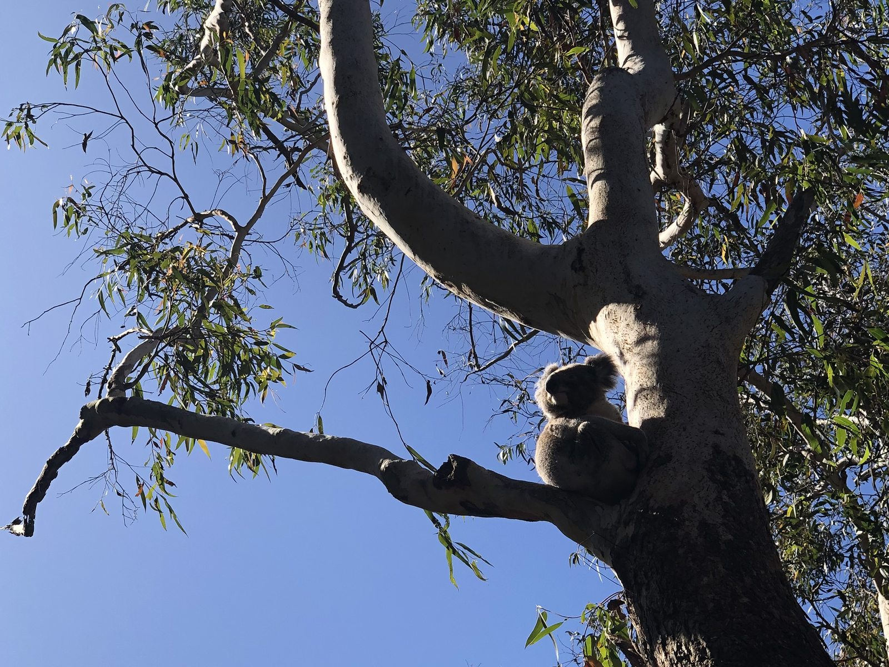
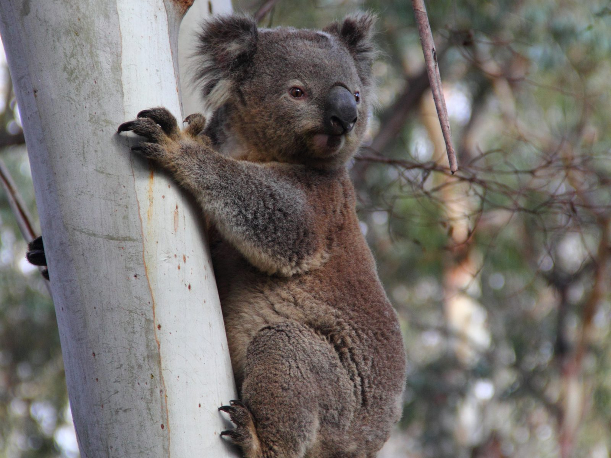
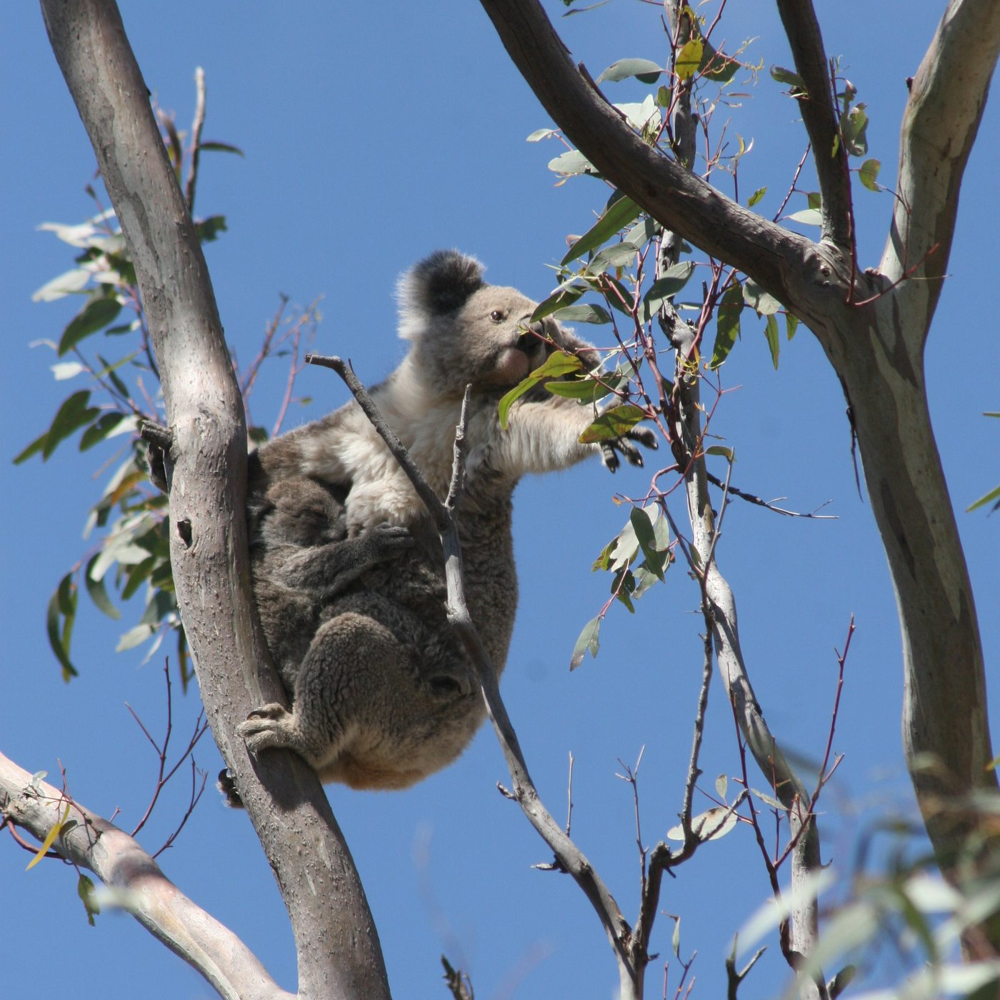
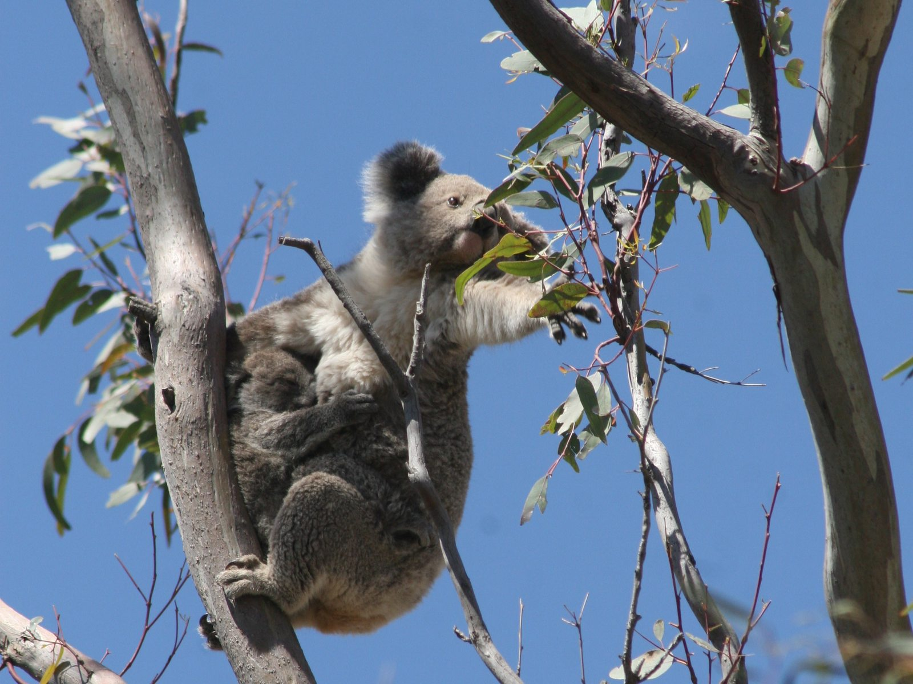

Saving Species
NSW

Saving Species
Genetic Code of Koalas
You cannot protect a population you cannot tell apart from the next one. We funded the Australian Museum to read the DNA of koalas on the New South Wales mid-north coast and find out whether they were still reaching each other.
3.5bnBase pairs mappedThe complete koala genome, slightly larger than our own and sequenced to comparable quality.
26,558Koala genes identifiedIncluding the immune and detoxification genes that decide how a koala handles disease and its diet.
54Scientists involvedAcross 29 research institutions in seven countries, over five years of work.
Koala genome figures from the Koala Genome Consortium, published in Nature Genetics, July 2018. FNPW funded the mid-north coast population genetics work in 2013.

The problem
A koala can be surrounded by trees and still be stranded
Habitat loss is usually described as forest disappearing, and that is only half of it. The other half is what happens to the forest left behind. Roads, clearing and development cut it into fragments, and koalas that once moved freely between them stop meeting, stop breeding with each other, and slowly become separate small populations rather than one large one.
Small isolated populations lose genetic diversity, and diversity is what lets a species absorb a shock. It is the difference between a disease outbreak thinning a population and ending it. The trouble is that none of this is visible from the ground. A survey can count koalas in two reserves and tell you nothing at all about whether those koalas are still connected.

The approach
Reading connection out of the DNA itself
In 2013 the Foundation for National Parks & Wildlife funded the Australian Museum to answer that question for koalas around Port Macquarie and the wider mid-north coast. Koalas in Queensland, New South Wales and the Australian Capital Territory had been listed as vulnerable under national environmental law the year before, and the question of whether the remaining populations were still connected had become a live one. The method does not require following an animal anywhere. It reads two different genetic records held inside each koala and works backwards from them.
Microsatellite markers are short repeating sequences that change quickly between generations, so they show whether animals in neighbouring patches are currently breeding with one another. Mitochondrial DNA passes down the maternal line almost unchanged, so it shows the deeper history of where a population came from. Read together, the two tell you both how connected these koalas are now and how connected they used to be.

The finding
The diversity is still there, and the corridors are what hold it
The result was better than it might have been. Both the microsatellite and the mitochondrial data showed that koalas around Port Macquarie still carry relatively high genetic diversity, and that gene flow between groups has not collapsed. This is a population with something worth protecting rather than one already in genetic trouble.
The conclusion that matters for anyone managing that landscape follows directly. Because the connectivity is still intact, the dispersal corridors that maintain it have to stay open. Diversity of this kind is far easier to keep than to rebuild, and the moment the corridors close, the clock starts running the other way.
The Koala Genome Consortium has been an ambitious journey affording us great insights into the genetic building blocks that make up a koala, one of Australia’s, as well as the world’s, most charismatic and iconic mammals.
The wider work
The same laboratory went on to sequence the whole koala
The Australian Museum team that carried out this work was also leading something considerably larger. In 2018 the Koala Genome Consortium, led by Professor Rebecca Johnson with Professor Katherine Belov at the University of Sydney, published the first complete koala genome in Nature Genetics. Fifty-four scientists across 29 institutions and seven countries spent five years on it, and the result was the most complete marsupial genome produced to that point, comparable in quality to the human genome.
A genome is not an end in itself. It is a reference that makes other questions answerable, and for koalas the questions were already urgent.
- Chlamydia immune genes mapped, opening a path to a vaccine
- Koala retrovirus its origins and why some animals are more susceptible
- Eucalypt diet the expanded detoxification genes behind it
- Veterinary care safer drug and pain-relief dosing
- Population management a reference for reading any koala’s DNA
That last point is where the two halves of this work meet. The detoxification genes explain how a koala survives a diet that would poison most animals, and they also explain why koalas process medicines so unusually, which changes how a vet treats an injured one. The immune genes explain why chlamydia moves through some populations and not others. And the genome gives every future population study, including the kind we funded on the mid-north coast, a far sharper reference to work against.

What happens next
Why a 2013 result still matters
A great deal has changed for koalas since this work was funded. The 2019 and 2020 bushfires burned through a large part of their range on the New South Wales coast. As of 2026 the koala is no longer listed as vulnerable in the eastern states: the listing was raised to endangered on 12 February 2022, and it covers Queensland, New South Wales and the Australian Capital Territory.
That makes the baseline more valuable rather than less. Knowing what the genetic diversity and connectivity of these koalas looked like before the fires is the only way to measure what the fires cost, and the only way to judge whether the corridors being replanted now are doing the job they were meant to do. Genetics is slow science, and it repays patience by making later answers possible.
It also points the funding somewhere specific. If the corridors are what hold the diversity, then the tree planting, the weed control and the habitat linkage work we fund elsewhere are not separate from this research. They are what the research told us to do.
With thanks
Project partners
The Australian Museum is the lead organisation for this project, through the Australian Museum Research Institute, with the koala genome work carried out by the Koala Genome Consortium alongside the University of Sydney.
More from this pillar
Related projects

Help fund work like this.
Every FNPW project is powered by donations, bequests and partnerships.